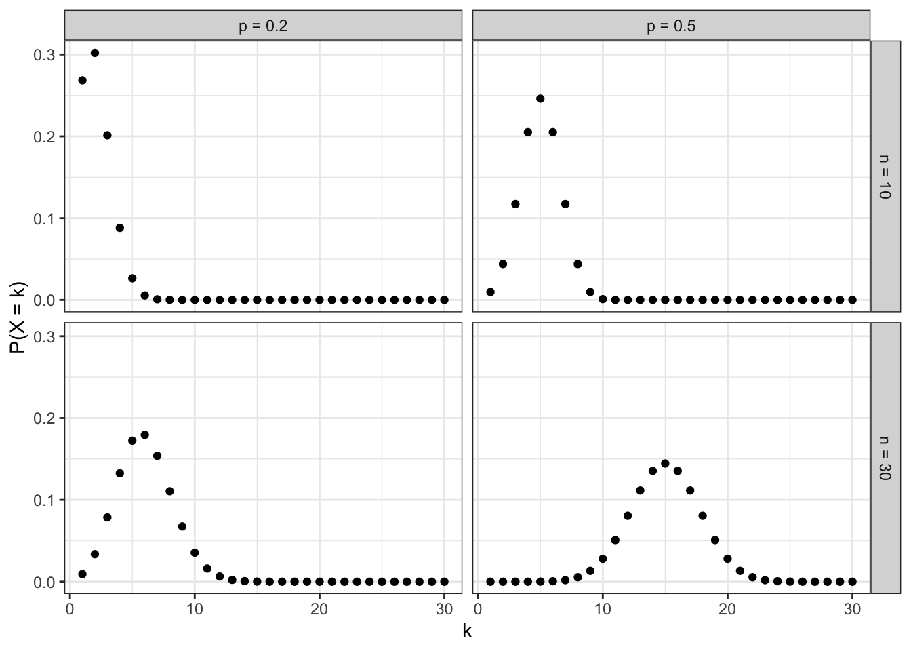
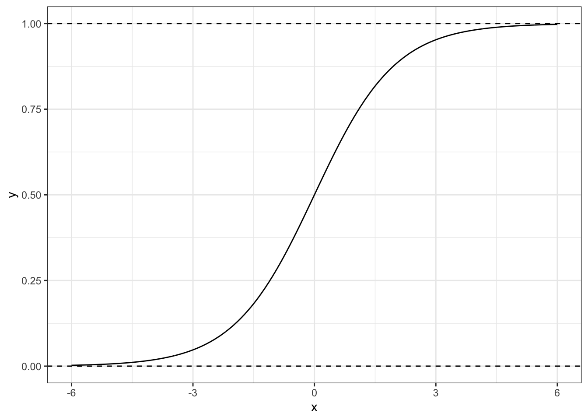
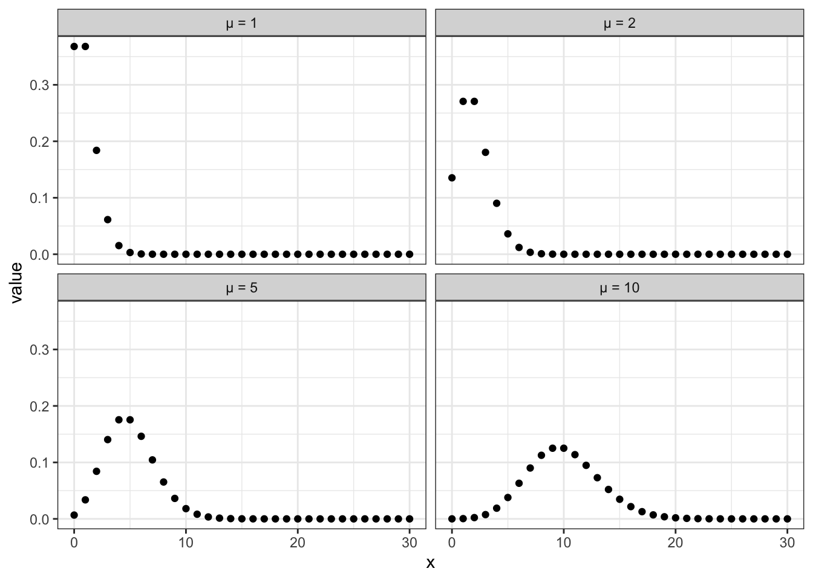

10 L10 // Обобщенные линейные модели. Логистическая регрессия. Пуассоновская регрессия
10.1 Ограничения общих линейных моделей
Модели, которые мы изучали на предыдущих занятиях носят название общих линейных моделей (general linear models). Они достаточно просты и удобны в большинстве случаев, однако имеют существенное ограничений.
Вспомним, как выглядит уравнение такой модели:
\[ y = \beta_0 + \beta_1 x_1 + \beta_2 x_2 + \dots + \beta_p x_p + \varepsilon \]
Предикторы в такой модели, как мы знаем, могут быть как дискретными, так и непрерывными. Однако ключевым допущением (и требованием) этой модели является распределение ошибки:
\[ \varepsilon \thicksim \mathcal{N}(0, \sigma^2) \]
Поскольку ошибка модели должна быть распределена нормально, а моделируется среднее значение, то можно сформулировать более общее допущение/требование:
\[ y \thicksim \mathcal{N}(\mu, \sigma^2) \]
Таким образом, общие линейные модели позволяют моделировать зависимости только для нормально-распределенных величин. Если же отклик модели (он же зависимая переменная) подчиняется другому распределению, эти модели не годятся.
10.2 Идея обобщенных линейных моделей
Тем не менее, мы из своего опыта знаем, что существует много величин, распределение которых отличается от нормального. И дело даже не столько в асимметрии или эксцессе — здесь разговор о самой природе величин. Так, например, есть величина «поступление в вуз», у которой только два возможных значения — «поступил» и «не поступил». Или же, скажем, количество детей в семьей, варьирующееся в небольших пределах и принимающее только положительные целочисленые значения.
Нам хочется моделировать связь таких величин с предикторами так же, как мы делали в случае общих линейных моделей, или хотя бы в той же логике, которая нам хороша знакома из линейной регрессии. Для того, чтобы этого достичь, в модель вводится новый компонент — функция связи (link function).
- Пусть у нас есть некоторая переменная \(y\), которая подчиняется какому-то закону распределения \(f(y|\theta)\), где \(\theta\) — параметр(ы) распределения, и этот закон отличается от нормального.
- Мы всё так же хотим моделировать «среднее» значение, а точнее, математическое ожидание, переменной \(\mathbb{E}(y)\).
- Давайте возьмем некоторое преобразование (функцию) \(g \big( \mathbb{E}(y) \big) = \eta\), которое будет преобразовывать математическое ожидание нашей целевой переменной, линеаризуя его. Она и будет называться функцией связи.
- Теперь у нас есть линейная величина \(\eta\), которую можно моделировать с помощью уже хорошо знакомой нам модели:
\[ \eta_i = \beta_0 + \beta_1 x_1 + \beta_2 x_2 + \dots + \beta_p x_p + \varepsilon \]
- Однако нас всё же интересует с точки зрения изученя закономерностей не \(\eta\), а \(\mathbb{E}(y)\), но так как функция \(g \big( \mathbb{E}(y) \big)\) известна, мы возьмем обратную функцию \(g^{-1} (\eta) = \mathbb{E}(y)\) и получим интересующие нас значения.
Такова общая логика обобщенных линейных моделей (generalized linear models, GLM). Какая именно функция связи (и, соответственно, обратная функция) будет использоваться, зависит от распределения целевой переменной. Далее мы рассмотрим два конкретных примера. Но уже сейчас мы можем написать общее уравнения для таких моделей:
\[ g \big( \mathbb{E}(y_i) \big) = \beta_0 + \beta_1 x_{i1} + \beta_2 x_{i2} + \dots + \beta_p x_{ip} + \varepsilon_i \]
Один из особых случаев возникает, когда к целевой переменной не применяется никакого преобразования — то есть используется \(g \big( \mathbb{E}(y)) = \mu\) при \(y \thicksim \mathcal{N}(\mu, \sigma^2)\). Такая функция связи называется функцией индентичности (identity function). В этом случае получается следующее:
\[ g \big( \mathbb{E}(y_i) \big) = \mu_i = \beta_0 + \beta_1 x_{i1} + \beta_2 x_{i2} + \dots + \beta_p x_{ip} + \varepsilon_i \]
То есть мы получили обычную хорошо нам знакомую линейную регрессию. В этом смысле обобщенные линейные модели действительно обобщают случай обычной линейной регрессии на другие случай распределения целевой переменной.
10.3 Биноминальная регрессия
Рассмотрение фреймворка обобщенных линейных моделей мы начнем с биномиальной, или логистической, регрессии, которая позволяет моделировать бинарные переменные.
10.3.1 Бинарные переменные и биномиальное распределение
Бинарными называются переменные, которые могут принимать только два значения — вообще, любых, но так как нам нужнв такие обозначения, которые сможет переварить математика, используем \(0\) и \(1\). Для нас это будут просто лейблы классов, так как мы, заменив обозначения, остались в рамках номинальной шкалы.
В теме про случайные величины мы вычисляли вероятность случайного прохождения теста из \(n\) вопросов, каждый из которых мог быть решен правильно («успех», \(1\)) или неправильно («неудача», \(0\)), и описывали вероятность получить \(k\) «успехов» в \(n\) испытаниях как
\[ \mathbb{P}(X = k) = C_n^k \, p^k \, q^{n-k} \]
Эта формула и задает биномиальное распределение: \(\mathbb{P}(X = k) \thicksim \text{Bin}(n, p)\):
От этого распределения и происходит название рассматриваемой регрессионной модели.
10.3.2 Математическая модель
Тем не менее, хоть биномиальное распределения и существует, реализация \(0\) и \(1\) в отдельном наблюдении полчинается не ему1, поэтому первым концептуальным шагом построения модели биномиальной регрессии является переход от моделирования \(0\) и \(1\) к моделированию вероятности получения \(1\).
Рассмотрим картинку. Пусть мы пытаемся смоделировать связь между бинарной целевой переменной \(Y\) и количественным предиктором \(X\). Тогда её визуализация будет схематично выглядеть так:

Тогда мы можем посчитать доли единиц в общем количестве исходов при данном значении предиктора \(p_{Y=1|x_i}\) и использовать их как оценку вероятности \(\mathbb{P}(Y=1|x_i)\):

Отлично, мы получили непрерывную переменную! В принципе, можно попытаться смоделировать её с помощью линейной регрессии, однако возникнет некоторая проблема:

Переменная, которую мы получили, определяет вероятность, а значит она ограничена — \(0 \leq \mathbb{P}(Y=1|x_i) \leq 1\). К тому же, чисто визуально заметно, что эта вероятность изменяется нелинейной, а по некоторой кривой — примерно так:

Супер… Теперь еще и искать кривую…
10.3.2.1 Логистическая кривая
К счаcтью, математики поработали за нас, и сообщили нам, что такая закономерность хорошо моделируется логистической кривой (logistic curve) — отсюда второй название рассматриваемой нами модели (логистическая регрессия):

Эта прямая как раз зажата по \(y\) между нулем и единицей, а её изгибы хорошо подходят под связь вероятности \(\mathbb{P}(Y=1|x_i)\) со значением предиктора \(X\).
Её формула такова:
\[ y = \frac{e^x}{1 + e^x} \]
Однако если мы хотим описывать зависимость вероятности от значения предиктора, то вместо \(x\) нам необходимо подставить \(\beta_0 + \beta_1 x_{i1} + \beta_2 x_{i2} + \dots \beta_p x_{ip}\):
\[ \mathbb{P}(Y=1|x_i) = p_i = \frac{e^{ \beta_0 + \beta_1 x_{i1} + \beta_2 x_{i2} + \dots \beta_p x_{ip}} } {1 + e^{ \beta_0 + \beta_1 x_{i1} + \beta_2 x_{i2} + \dots \beta_p x_{ip}} } \]
Выглядит, безусловно, страшно. Но наш путь еще не завершен…
10.3.2.2 Шансы и логиты
Мы победили дискретность целевой переменной \(y\) и подобрали кривую, которая хорошо моделирует зависимость искомой вероятности от значений предиктора. Однако кривая всё ещё ограничена нулем и единицей, а значит смоделировать её м помощью линейной регрессии не получится.
Для того, чтобы победить ограниченность логистической кривой, используются шансы.
Шанс (отношение шансов, odds, odds ratio) — это отношение вреоятности «успеха» (\(1\)) к вероятности «неудачи» (\(0\)). Эта величина хороша тем, что изменяется от \(0\) до \(+\infty\). Получается,
\[ \text{odds}_i = \frac{\mathbb{P}(Y=1|x_i)}{1 - \mathbb{P}(Y=1|x_i)} = \frac{p_i}{1 - p_i} \]
Отлично, мы побороли ограниченность логистической кривой сверху — движемся к успеху.
10.3.2.3 Logit-преобразование
Для того, чтобы победить ограниченность кривой снизу, возьмем логарифм от шанса. Получим следующее:
\[ \text{logit}(p_i) = \ln \left(\frac{p_i}{1 - p_i} \right) \]
Такое преобразование вероятности разывается логит-преобразованием (logit-transformation). Значения логитов варьируются от \(-\infty\) до \(+\infty\), симметричны относительно нуля, и их удобно брать в каечестве целевой переменной для построения линейной модели. Кроме того, логит-преобразование еще и линеаризует логистическую кривую! Очень хорошее преобразование! Просто замечательное.
Линеаризация логистической кривой через logit-преобразование
Возьмем случай в одним предиктором, чтобы было попроще. Логистическая кривая, моделирующая вероятность, имеет такой вид:
\[ p_i = \frac{e^{\beta_0 + \beta_1 x_{i1}}} {1 + e^{\beta_0 + \beta_1 x_{i1}}} \]
Обозначим \(\beta_0 + \beta_1 x_{i1} = t\). Тогда необходимо показать, что логит-преобразование
\[ \text{logit} (p_i) = \ln \left(\frac{p_i}{1 - p_i} \right) \]
делает логистическую функцию линейной, то есть обычной прямой. Иначе говоря, необходимо показать, что
\[ \ln \left(\frac{p_i}{1 - p_i} \right)= t_i \]
Доказывается это через расписывание формулы и раскрытие всех скобок и логарифмов (индекс \(i\) опущен для упрощения записи):
\[ \begin{split} \ln \left(\frac{p}{1-p} \right)&= \\ &= \ln \left(\frac{\frac{e^t}{1 + e^t}}{1 - \frac{e^t}{1 + e^t}} \right)= \\ &= \ln \left(\frac{e^t}{1 + e^t} \right)- \ln \left(1 - \frac{e^t}{1 + e^t} \right)= \\ &= \ln \left(\frac{e^t}{1 + e^t} \right)- \ln \left(\frac{1 + e^t - e^t}{1 + e^t} \right)= \\ &= \ln \left(\frac{e^t}{1 + e^t} \right)- \ln \left(\frac{1}{1 + e^t} \right)= \\ &= \ln (e^t) - \ln (1 + e^t) - \big(\ln (1) - \ln (1+e^t)\big) = \\ &= \ln (e^t) - \ln (1) = \\ &= \ln (e^t) = t \end{split} \]
Cаммари того, что происходило выше:
- От дискретной оценки событий (0 и 1) переходим к оценке вероятностей.
- Связь вероятностей с предиктором описывается логистической кривой.
- Если при помощи функции связи перейти от вероятностей к логитам, то связь будет описываться прямой линией.
- Параметры линейной модели для такой прямой можно оценить с помощью регрессионного анализа.
В итоге мы получаем, что математическая модель логистической регрессии выглядит так:
\[ p_i = \frac{e^{\beta_0 + \beta_1 x_{i1}}} {1 + e^{\beta_0 + \beta_1 x_{i1}}} \]
Функция связи — логит:
\[ \text{logit} (p_i) = \ln \left(\frac{p_i}{1 - p_i} \right)= \eta_i \]
\[ \eta_i = \beta_0 + \beta_1 x_{i1} + \beta_2 x_{i2} + \dots + \beta_p x_{ip} \]
А это ровно то, что нам было нужно!
Для перехода от логитов к вероятностям используется обратная функция вида
\[ p_i = \frac{e^{\eta_i}}{1 + e^{\eta_i}} \]
10.3.3 Идентификация модели
Все эти модификации модели приводят к тому, что задача индентификации модели логистической регрессии — то есть вычисления значений коэффициентов модели — не имеет аналитического решения. То есть мы не можем вычислить коэффциент просто имея значения целевой переменной и предикторов. По этой причине используются численные методы для получения оценок коэффициентов.
10.3.3.1 Метод максимального правдоподобия
В частности, метод максимального правдоподобия (maximuum likelihood), который позволяет получить несмешенные и состоятельные и эффективные оценки коэффициентов.
Правдоподобие (likelihood) — это способ измерить соответствие имеющихся данных тому, что можно получить при определенных значениях параметров модели.
Вычисляется значение правдоподобия как произведение вероятностей получения каждой из точек данных:
\[ L(\theta|\text{data}) = \prod_{i=1}^n f(\text{data}|\theta), \]
где \(f(\text{data}|\theta)\) — функция распределения с параметрами \(\theta\).
Задача метода максимального правдоподобия — найти наиболее правдоподобное решение, иначе говоря, максимизировать значение функции правдоподобия:
\[ L(\theta|\text{data}) \to \max_{\mathbf{b}} \]
Так как правдоподобие — это произведение вероятностей, то функция правдоподобия принимает очень маленькие значение, поэтому работают с максимизацией логарифма правдоподобия (loglikelihood):
\[ \ln \big( L(\theta | \text{data}) \big) \to \max_{\mathbf{b}} \]
10.3.4 Тестирование качества модели
Приколы, связанные с преобразованиями на этом не заканчиваются. При переходе к обобщенным линейным моделям у нас пропадают две важные статистики: \(F\)-статистика и \(R^2\) — их теперь невозможно рассчитать, так как мы моделируем вероятность получения «единиц», а не сами «единицы» и «нули».
Что же делать?
10.3.4.1 Девианса
Нам на помощь приходит девианса (deviance). Чтобы попробовать понять, что это такое, введем две теоретические модели:
- Насыщенная модель (saturated model) — модель, в которой каждое наблюдение (сочетание предикторов) описывается одним из \(n\) параметров. Для такой модели справедливо:
\[ \begin{split} & \ln L_\text{sat} = 0 \\ & \text{df}_\text{sat} = n - p_\text{sat} = n - n = 0 \end{split} \]
- Нулевая модель (null model) — модель, в которой все наблюдения описываются одним параметром (средним значением). Для такой модели справедливо:
\[ \begin{split} & \eta_i = \beta_0 \\ & \ln L_\text{null} \neq 0, \; \ln L_\text{null} \to -\infty \\ & \text{df}_\text{null} = n - p_\text{null} = n - 1 \end{split} \]
Наша же [предложенная] модель, то есть та, с которой мы работаем, будем находится где-то между насыщенной и нулевой моделями:
\[ \begin{split} & \eta_i = \beta_0 + \beta_1 x_{i1} + \beta_2 x_{i2} + \dots + \beta_p x_{ip} \\ & \ln L_\text{model} \neq 0 \\ & \text{df}_\text{model} = n - p_\text{model} \end{split} \]
Девианса является мерой различия правдоподобий двух моделей (оценка разницы логарифмов правдоподобий)

- Остаточная девианса: \(d_\text{resid} = 2(\ln L_\text{sat} - \ln L_\text{model}) = -2 \ln L_\text{model}\)
- Нулевая девианса: \(d_\text{null} = 2(\ln L_\text{sat} - \ln L_\text{null}) = -2 \ln L_\text{null}\)
10.3.4.2 Анализ девиансы
Сравнение нулевой и остаточной девианс позволяет судить о статистической значимости модели в целом. Такое сравнение проводится с помощью теста отношения правдоподобий (likelihood ratio test, LRT).
\[ \begin{split} d_\text{null} - d_\text{resid} &= \\ &= -2 (\ln L_\text{null} - \ln L_\text{model}) = \\ &= 2 (\ln L_\text{model} - \ln L_\text{null}) = \\ &= 2 \ln \left(\frac{L_\text{model}}{L_\text{null}} \right) \end{split} \]
\[ \text{LRT} = 2 \ln \left(\frac{L_\text{M1}}{L_\text{M2}} \right)= 2 (\ln L_\text{M1} - \ln L_\text{M2}), \]
где \(\text{M1}\) и \(\text{M2}\) — вложенные модели (\(\text{M1}\) — более полная, \(\text{M2}\) — сокращенная). Распределение разницы логарифмов правдоподобий аппроксимируется распределением \(\chi^2\) со степенями свободы \(\text{df} = \text{df}_\text{M2} - \text{df}_\text{M1}\).
То есть, в общем случае тест отношения правдоподобий позволяет статистически сравнить две модели друг с другом. В случае же тестирования значимости модели в целом получается следующее:
\[ \begin{split} & \text{LRT} = 2 \ln \left(\frac{L_\text{model}}{L_\text{null}} \right)= 2 (\ln L_\text{model} - \ln L_\text{null}) = d_\text{null} - d_\text{model} \\ & \text{df} = p_\text{model} - 1 \end{split} \]
Кроме того, поскольку мы можем исключить из модели только один предиктор, тест отношения правдоподобий может быть использован и для тестирования значимости отдельных предикторов:
\[ \begin{split} & \text{LRT} = 2 \ln \left(\frac{L_\text{model}}{L_\text{reduced}} \right)= 2 (\ln L_\text{model} - \ln L_\text{reduced}) \\ & \text{df} = p_\text{model} - p_\text{reduced} \end{split} \]
Итак, тест отношения правдоподобий является аналогом F-статистики. Что же делать с отсутствием \(R^2\)?
Здесь также помогает девианса. Одним из вариантов оценки качества модели является расчет доли объясненной девиансы:
\[ \frac{d_\text{null} - d_\text{residual}}{d_\text{null}} \]
Эта метрика — одна из разновидностей «псевдо-\(R^2\)».
10.3.4.3 Информационные критерии
Помимо статистических критериев, сравнить модели можно также с использованием информационных критериев. Их два — баейсовский (Bayesian information criterion, BIC) и информационный критерий Акаике (Akaike information criterion, AIC). Чем ниже значение информационного критерия, тем лучше модель описывает имеющиеся данные.
10.3.4.4 Допущения логистической регрессии
Ряд допущений логистической регрессии совпадает с допущениями общих линейных моделей. В частности:
- независимость наблюдений
- линейность связи целевой переменной и предикторов (с учетом функции связи)
- отсутствие коллинеарности предикторов
Однако появляется еще одно важное допущение — отсутствие сверхдисперсии.
10.3.4.5 Проверка на сверхдисперсию
Новое допущение связано с тем, что для биномиального распределения характерна связт между математическим ожиданием и дисперсией — этого не было у нормального распределения. Для биномиального распределения:
\[ \begin{split} & \mathbb{E}(X) = np \\ & \text{var}{X} = np(p-1) \end{split} \]
где \(n\) — количество испытаний, \(p\) — вероятность «успеха» в одном испытании.
Если в модели обнаруживается свердисперсия, то мы на может гарантировать, что искомая закономерность смоделирована точно. В детали расчета и проверки гипотезы мы прогружать не будет, на практике воспользуемся специальной функцией для проверки этого допущения.
10.3.5 Тестирование значимости предикторов
С одним из способ тестирование статистической значимости предикторов мы уже познакомились — это тесты отношения правдоподобий. Однако существует и второй способ — в каком-то смысле более «базовый» — тесты Вальда.
10.3.5.1 Тесты Вальда
Эти тесты являются аналогом t-тестов для общих линейных моделей, однако являются менее точными, так как распределение их z-статистики только ассимптотически стремится к нормальному. Это значит, что на малых выборках эти тесты буду давать неточные результаты.
Тем не менее, они автоматически выводятся в аутпуте функций в R, поэтому посмотрим на них — они критически похожи на t-тесты:
\[ \begin{split} H_0 &: \beta_k = 0 \\ H_1 &: \beta_k \neq 0 \end{split} \]
\[ z = \frac{b_k - \beta_k}{\text{se}_{b_k}} = \frac{b_k}{\text{se}_{b_k}} \thicksim \mathcal{N}(0, 1) \]
10.3.6 Интерпретация коэффициентов модели
С интерпретацией значений коэффициентов тоже оказывается не все просто. Вспомним, коэффициенты какой модели мы в итоге получаем:
\[ \eta_i = \hat \beta_0 + \hat \beta_1 x_{i1} + \hat \beta_2 x_{i2} + \dots + \hat \beta_p x_{ip} \]
Наша целевая переменная в модели, для которой мы получили значения предикторов — это логарифм отношения шансов. Довольно сложно понять, что это такой с содержательной стороны. Однако чисто технически получается следующее:
- \(\hat \beta_0\), интерсепт, показывает логарифм отношения шансов для случая, когда значения всех предикторов равны нулю
- \(\hat \beta_k\) показывает, на сколько изменится логарифм отношения шансов при изменении значения предиктора на единицу
Корректно, но всё её непонятно…
Давайте посмотрим, что получится, если расписать изменение логарифма отношения шансов. Пусть для простоты у нас есть модель с одним непрерывным предиктором:
\[ \eta = b_0 + b_1 x \]
При этом
\[ \eta = \ln \left(\frac{p}{1-p} \right)= \ln (\text{odds}) \]
Как изменится предсказание модели при увеличении предиктора на единицу?
\[ \eta_{x+1} - \eta_x = \ln (\text{odds}_{x+1}) - \ln (\text{odds}_x) = \ln \left(\frac{\text{odds}_{x+1}}{\text{odds}_x} \right) \]
С другой стороны:
\[ \begin{split} \eta_{x+1} - \eta_x &= \big( b_0 + b_1(x+1) \big) - \big( b_0 + b_1 x \big) = \\ &= b_0 + b_1 x + b_1 - b_0 - b_1 x = b_1 \end{split} \]
Получается, что
\[ \begin{split} \ln \left(\frac{\text{odds}_{x+1}}{\text{odds}_x} \right)&= b_1 \\ \frac{\text{odds}_{x+1}}{\text{odds}_x} = e^{b_1} \end{split} \]
Таким образом, \(e^{b_1}\) показывает, во сколько раз изменится шанс того, что наблюдение принадлежит к группе «единиц» при увеличении предиктора на единицу. Для дискретных предикторов \(e^{b_1}\) покажет, во сколько раз различается отношение шансов для данного уровня предиктора по сравнению с базовым.
10.3.7 Предсказательная сила модели
Оценить предсказательную силу общих линейных моделей не сложно — надо сравнить предсказанные значения с предскавленными в данных. С логистической моделью же есть некоторые тонкости.
В данных у нас лежат нули и единицы, а модель нам возвращает вероятность того, что отдельное наблюдение является единицей. Для того, чтобы нам получить предсказанные значения, которые мы будем сопоставлять с имеющимися в данных, нам необходимо перевести непрерывные предсказания в дискретные.
Для этого необходимо выбрать порог — если значение вероятности выше него, мы будем считать, что модель предсказала \(1\), если ниже, то \(0\). Значение порога зависит от многих факторов и будет влиять на качество модели. Прежде всего стоит ориентироваться на сферу деятельности, в которой вы проводите анализ. Если у вас качественные чистые данные и вам важна высокая точность, то и порог для предсказаний должен быть высокий — \(\geq 0.9\). Если же вы знаете, что вы работаете с зашумлёнными данными, и цена ошибки не так высока, то можете выбрать более либеральный критерий — \(0.7\)–\(0.8\). Самый либеральный критерий из возможных — \(0.5\), что по сути есть вероятность случайного угадывания.
10.3.7.1 Confusion mattrix
Когда мы перевели вероятности в нули и единицы, мы можем построить confusion matrix — — это таблица частот по модельным и реальным значениям нашей целевой переменной. Её общая структура выглядит так:
| Предсказания: \(0\) | Предсказания: \(1\) | |
|---|---|---|
| Данные: \(0\) | \(\text{TN}\) | \(\text{FP}\) |
| Данные: \(1\) | \(\text{FN}\) | \(\text{TP}\) |
- True Positive (\(\text{TP}\)) — верное предсказанные единицы
- True Negative (\(\text{TN}\)) — верно предсказанные нули
- False Positive (\(\text{FP}\)) — ложноположительные предсказания, ошибочно предсказанные единицы
- False Negative ($ — ложноотрицательные предсказания, ошибочно предсказанные нули
На основе данных значение можно расчитать несколько метрик качества модели.
10.3.7.1.1 Accuracy
Чаще всего эту метрику называют «точность». Она определяется по формуле
\[ \text{accuracy} = \frac{\text{TP} + \text{TN}}{\text{TP} + \text{TN} + \text{FP} + \text{FN}} \]
Она показывает долю верно предказанных значений и хорошо работает на сбалансированных данных, когда у вас одинаковое количество нулей и единиц в исходном датасете. Однако в случае несбалансированных данных даже самая плохая модель может иметь высокий показатель accuracy. Например, в данных такие значения целевой переменной:
\[ \begin{pmatrix} 0 & 0 & 0 & 0 & 0 & 1 & 0 & 0 & 0 & 1 & 1 \end{pmatrix} \]
Пусть у нас есть наиболее топорная модель, которая просто всегда предсказывает ноль — у такой модели accuracy окажется равной \(0.73\). Вроде бы высокий показатель, но совершенное неадекватно описывает качество модели.
Поэтому были придуманы более точные метрики.
10.3.7.1.2 Precision
Presicion тоже переводится как «точность», поэтому лучше пользоваться английской терминологией во избежании путаницы. Эта метрика показывается долю верно предсказанных единиц, то есть сколько из предсказанных единиц предсказано верно:
\[ \text{precision} = \frac{\text{TP}}{\text{TP} + \text{FP}} \]
10.3.7.1.3 Recall
Recall можно перевести как «полнота», хотя по сути это снова «точность». Эта метрика показывается долю предсказанных единиц из всех единиц датасета, то есть сколько из всех единиц датасета модель предсказала верно:
\[ \text{recall} = \frac{\text{TP}}{\text{TP} + \text{FN}} \]
Очевидно, что чем ближе показатели всех метрик к единице, тем качество модели выше.
10.3.7.1.4 F1-мера
На основе precision и recall вычисляется ещё одна метрика качества, которая является гармоническим средним этих двух метрик.
\[ \text{F1} = 2 \cdot \frac{\text{precision} \cdot \text{recall}}{\text{precision} + \text{recall}} \]
10.3.7.2 ROC-AUC
Все описанные выше метрики качестве основывались на confusion matrix — их значения будут зависеть от выбранного порога при переводе непрерывных предсказаний в дискретные. А можно как-то без это зависимости?
Можно. Напоследок ещё одна метрика качества модели. Однако логика её расчёта не такая простая.
Чем хороша эта метрика? Тем, что она работает не с предсказанными значениями (0 и 1), а с предсказанными вероятностями. Таким образом, она избавляет нас от вмешательства нас же в предсказания, ведь когда мы выбираем порог, мы хотя и опираемся на какое-то содержательное основание, тем не менее, глобально выбираем его условно произвольно.
Что рассчитать значение этой метрики нужно сделать следующее (разберём на некотором вымышленном примере):
- Упорядочить объекты по убыванию значения предсказанной вероятности:
| № наблюдения | Вероятность |
|---|---|
| 1 | 1.00 |
| 2 | 0.90 |
| 3 | 0.80 |
| 4 | 0.75 |
| 5 | 0.60 |
| 6 | 0.50 |
| 7 | 0.43 |
| 8 | 0.32 |
| 9 | 0.20 |
| 10 | 0.15 |
- Добавить столбец истинных значений (0 и 1)
| № наблюдения | Вероятность | Значение |
|---|---|---|
| 1 | 1.00 | 1 |
| 2 | 0.90 | 1 |
| 3 | 0.80 | 0 |
| 4 | 0.75 | 1 |
| 5 | 0.60 | 0 |
| 6 | 0.50 | 1 |
| 7 | 0.43 | 0 |
| 8 | 0.32 | 0 |
| 9 | 0.20 | 0 |
| 10 | 0.15 | 0 |
Отметим, что если модель идеально справляется с предказаниями, то в упорядоченном по значению предсказанной вероятности наборе данных сначала будут идти все наблюдения с истинным значением \(1\), а потом с \(0\).
- Построим кривую, которая будет описывать качество нашей модели:
- Стартуем из точки \((0,0)\) и хотим прийти в точку \((1,1)\):

- Ось \(y\) делим на равные части, число которых равно количеству \(1\) в датасете:

- Ось \(x\) делим на равные части, число которых равно количеству \(0\) в датасете:

- Идём по нашим данным сверху вниз, и когда встречаем наблюдение со значением \(1\), поднимаемся на графике на одно деление вверх; когда встречаем наблюдение со значением \(0\), сдвигаемся на одно деление вправо.
- В итоге получится такая кривая:

Каждая точка на этой кривой соответствует некоторому порогу вероятности отсечения объектов. Например, выделенная точка (рисунок ниже) соответствует порогу вероятности \(0.6\) и имеет координаты \((\frac{1}{6}), \frac{3}{4})\). Это означает, что если при переходе к предсказаниями модели мы будем использовать порог \(0.6\), то доля True Positive, или True Positive Rate (TRP) окажется равной \(\frac{3}{4}\), а доля Falce Positive, или False Positive Rate (FPR) окажется равной \(\frac{1}{6}\).
Построенная кривая называется ROC-кривой (receiver operating characteristic).
- Определяем площадь фигуры под ROC-кривой — это и будет значением метрики ROC-AUC (AUC — area under a curve).

В случае идеального упорядочивания наблюдений по предсказанной вероятности площадь под кривой будет равна единице. Чем ближе значение ROC-AUC к единице, тем модель работает лучше. Значение \(0.5\) указывает на то, что модель совсем не ухватывает закономерность и точность её предсказаний на уровне случайного угадывания — ROC-кривая в этом случае будет проходить близко к диагонали \([(0,0),(1,1)]\).
10.4 Пуассоновская регрессия
10.4.1 Счетные данные. Распределение Пуассона
В жизни и практике мы часто сталкиваемся с так называемыми счётными величинами. Например, число комнат в квартире, количество детей в семье, число книг на полке, число людей, прошедших через турникет и т.д. Глобально — любые количества. Также как счётные величины можно рассмотреть шкалу Лайкерта или оценки по десятибалльной шкале — по сути, это количество набранных баллов2.
Какими свойствами обладают такие величины?
- Они могут принимать только неотрицательные целочисленные значения (\(x_i \in \mathbb{N}_{0}\))
- Разброс значений зависит от среднего значения (\(\text{var}(X) \propto \mathbb{E}(X)\))
Общие линейные модели, строго говоря, применимые только к непрерывным величинам1. Иногда свойства данных позволяют использовать такие методы для моделирования счётных величин, однако так бывает далеко не всегда.
Здесь мы обсудим самый простой подход к моделированию счетных величин, а также одну его модификацию, которая может быть полезна.
Модели для счётных данных базируются на распределении Пуассона.
10.4.1.1 Распределение Пуассона
Определяется следующим образом:
\[ Y \thicksim \text{Poisson} (\mu) \]
\[ f(y) = \frac{\mu^y e - \mu}{y!} \]
Единственный его параметр — это \(\mu\). Он задает и математические ожидание, и дисперсию:
\[ \begin{split} \mathbb{E}(Y) = \mu \\ \text{var}(Y) = \mu \end{split} \]
В зависимости от того, какие значения принимает этот параметр, распределение принимает достаточно сильно различающиеся формы. При малых значениях (\(\mu = 1\), \(\mu = 2\)) в распределении присутствует сильная левосторонняя асимметрия, при больших (\(\mu = 10\)) — распределение становится симметричным и очень похожим на нормальное распределение.

Необходимо отметить, что пуассоновское распределение предполагает, что дисперсия связана с математическим ожидание через функцию идентичности, то есть с увеличением математического ожидания дисперсия возрастает ровно так же, как и само математичекое ожидание. Это факт нам будет важен далее.
10.4.2 Почему общие линейные модели плохо работают?
Два свойства счетны случайных величин, оговоренные в самом начале раздела, объясняют, почему общие линейные модели плохо работают (или, по крайне мере, могут плохо работать) на счетных данных.
Первое свойство нам говорит о том, что количество не может быть отрицательным, и это логично. Обчная линейнная регрессия не имеет подобных ограничений, поэтому в предсказаниях будут появляться отрицательные значения. Что с ними делать не очень понятно.
Второе свойство говорит нам о том, что изначально не будет выполнено допущение гомоскедастичности остатков, так как чем выше математичекое ожидание, тем выше дисперсия. В итоге мы будем наблюдать воронкообразный паттер в распределении остатков.
Таким образом, оценки коэффициентов модели будут неточны, ошибки завышены, а следовательно, и результатам тестирования статистической значимости параметров модели доверять нельзя.
Что делать? Можно пойти простым путём — логарифмировать целевую переменную и построить модель для получившейся величины.
Но более корректным вариантом будет построить модель, основанную на распределении, подходящем для счётных данных. В частности, пуассоновском распределении.
10.4.3 Математическая модель
Так как мы находимся во фреймворке обобщенных линейных моделей, значит ключевой момент с формулировании модели — функция связи. У пуассоновской регрессии она очень проста — это всего лишь логарифм:
\[ \eta_i = \ln (y_i) \]
Применяя её к нашей переменной, мы получаем величину \(\eta_i\), которую можем моделировать линейной моделью. Соответственно, идентифицируемая модель будет такой же, как и прежде:
\[ \eta_i = \hat \beta_0 + \hat \beta_1 x_{i1} + \hat \beta_2 x_{i2} + \dots + \hat \beta_p x_{ip} \]
10.4.4 Результаты моделирования
Абсолютно аналогично биномиальной регрессии для пуассоновской будет:
- отсутствовать \(F\)-статистика
- отсутствовать \(R^2\)
- необходим анализ девиансы
- значимость коэффициентов тестироваться z-тестами Вальда
- необходима проверка на сверхдисперсию
Так как в биномиальной регрессии мы обсудили это достаточно подробно, не будем на этом останавливаться.
10.4.5 Квазипуассоновские модели
Однако по сравнению с биномиальной регрессией у пуассоновской есть одна особенность — а именно, возможность работать со сверхдисперсией.
Так как пуассоновская модель исходит из предположения равенства дисперсии и математического ожидания, если мы не обнаруживаем сверхдисперсии, то все хорошо. Если же это допущение не выполнено, то
- оценки стандартных ошибок коэффициентов будут занижены
- тесты Вальда для коэффициентов модели дадут неправильные результаты — из-за того, что оценки стандартных ошибок занижены— уровень значимости будет занижен
- тесты, основанные на сравнении правдоподобий, дадут смещенные результаты, так как соотношение девианс уже не будет подчиняться распределению \(\chi^2\)
Происходят все эти проблемы из-за того, что для распределения Пуассона справедливы следующие соотношения:
\[ \begin{split} & \text{var}(y_i) = \mu_i \\ & \text{var}(\mathbb{E}(y_i)) = \frac{\mu}{n} \\ & \text{se}_{\mathbb{E}(y_i)} = \sqrt{\text{var}\big( \mathbb{E}(y_i) \big)} \end{split} \]
Если обнаружена сверхдисперсия, то данные не подчиняются распределению Пуассона, и дисперсия в \(\phi\) раз больше среднего (\(\phi > 1\)). Тогда,
\[ \begin{split} & \text{var}(y_i) = \phi \mu_i \\ & \text{var}(\mathbb{E}(y_i)) = \frac{\phi \mu}{n} \\ & \text{se}_{\mathbb{E}(y_i)} = \sqrt{\phi \text{var}\big( \mathbb{E}(y_i) \big)} \end{split} \]
Каковы могут быть причины сверхдисперсии? Перечислим основные:
- в данных есть выбросы
- в модель не включен важный предиктор или взаимодействие предикторов
- нарушена независимость выборок (есть внутригрупповые корреляции)
- выбрана неподходящая функция связи
- выбрана неподходящая функция распределения для целевой переменной
А что же делать? Пусти есть разные. Мы рассмотрим наболее простой — построение квазипуассоновских моделей.
Не стоит думать, что существует «квази-пуассоновское» распределение —- эти модели также основываются на распределение Пуассона, но учитывают тот самый коэффициет \(\phi\), описывающий сверхдисперсию. Это, по сути, поправка на сверхдисперсию.
Сама модель не меняется по сравнению с пуассоновской регрессией, коэффициент \(\phi\) оценивается по данным. Кроме того, оценки параметром пуассоновских и квазипуассоновских моделей совпадают, однако в квазипуассоновских моделях:
- стандартные ошибки коэффициентов домножатся на \(\sqrt{\phi}\)
- доверительные интервалы коэффициентов домножаются на \(\sqrt{\phi}\)
- логарифмы правдоподобий, используемые для тестирования статистической значимости моделей, уменьшаются в \(\phi\) раз
А так как тестирование статистической значимости работает со стандартными ошибками, то и статистическая значимость также изменяется.
Также есть отличия и в статистических тестах:
- для анализа девиансы используются F-тесты
- для тестирования эначимости коэффициентов используются t-тесты
Это ключевые отличия квазипуассоновских моделей от пуассоновски — в остальном они полностью вписыватся во фреймворк GLM.
Хотя тут можно поспорить.↩︎